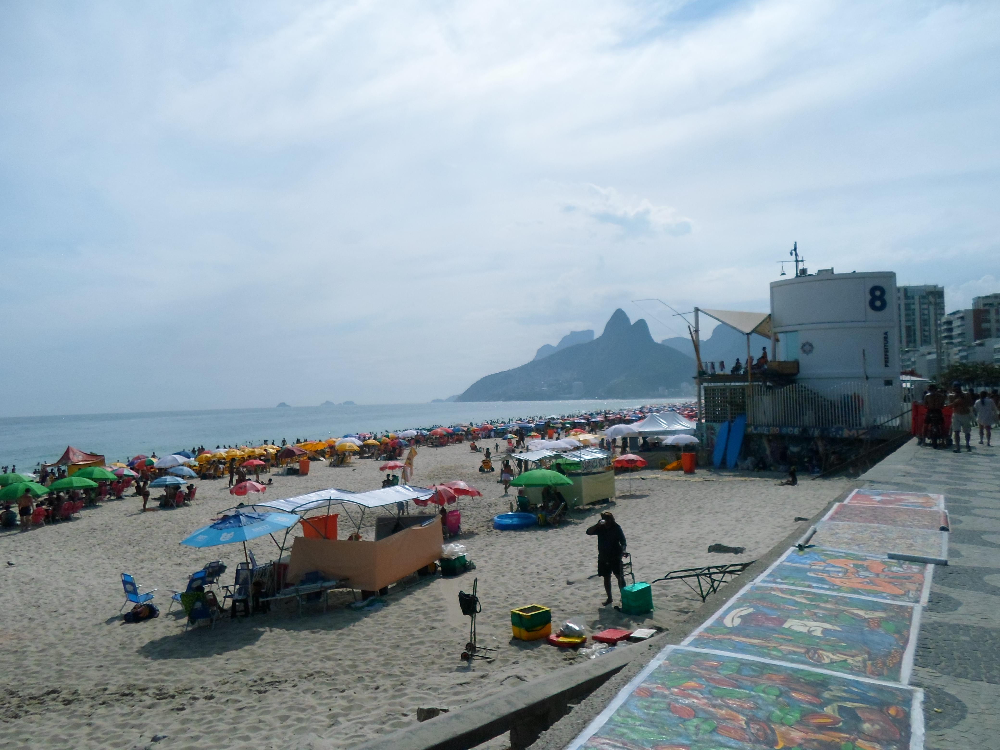

Copacabana

Copacabana es, junto con Ipanema, una de las playas más reconocidas del mundo. Su extensa costanera de arena blanca y su característica vereda de mosaicos en forma de olas la convirtieron en un símbolo de Río de Janeiro.
Cada 31 de diciembre, la playa reúne a millones de personas para celebrar el Réveillon, la fiesta de fin de año con fuegos artificiales más multitudinaria de Brasil.
← Volver a la página principal